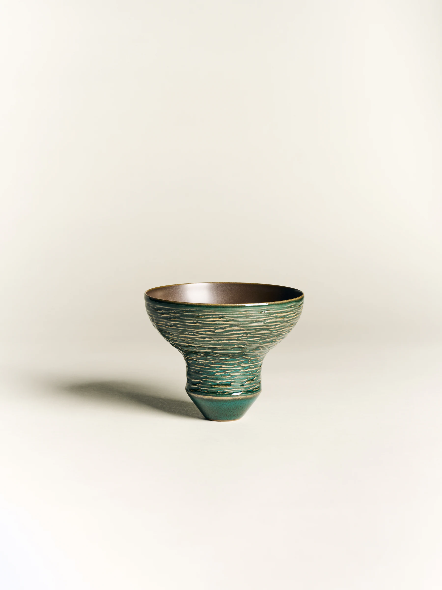
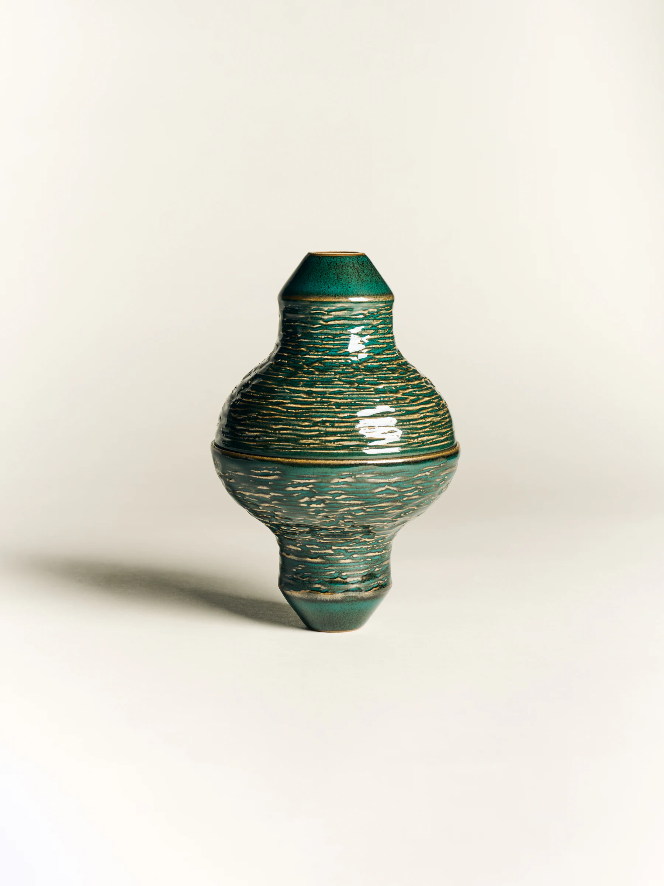

01
HOW OBJECTS ENTER EVERYDAY LIFE
Beginning with material, touch and the traces left by use, we reconsider the relationship between an object and the body.
03 / Philosophy
Notes on objects, bodies and time.
Beginning with material, touch and the traces left by use, we reconsider the relationship between an object and the body.



This section is suited to medium and long-form stories pairing image and text.


Each article can retain its own date, category and cover.